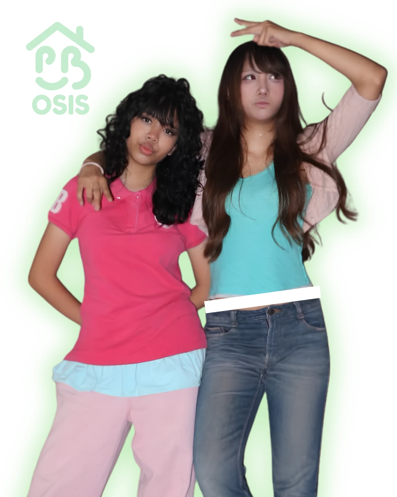
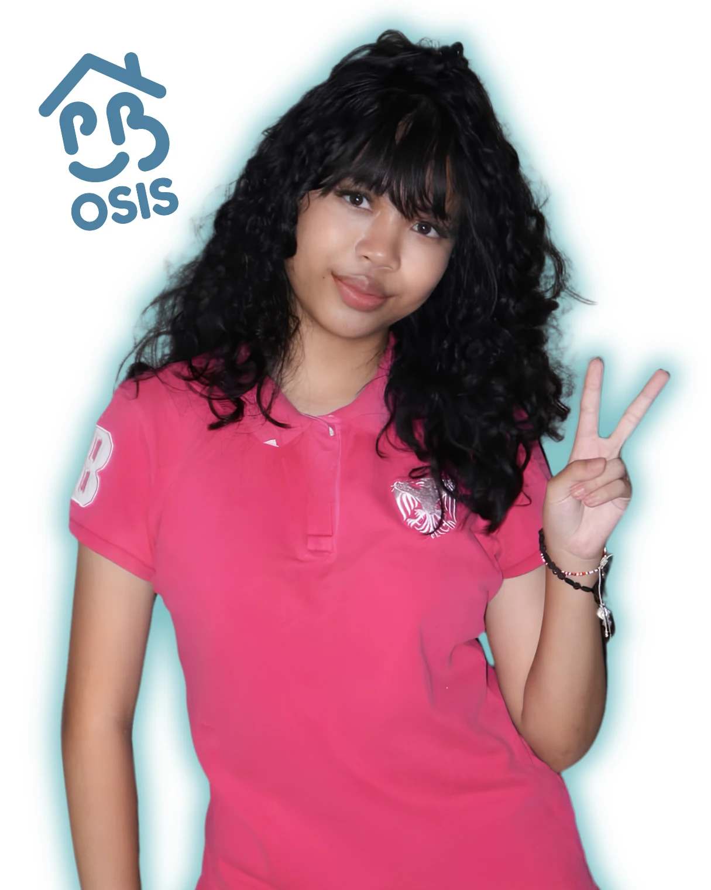
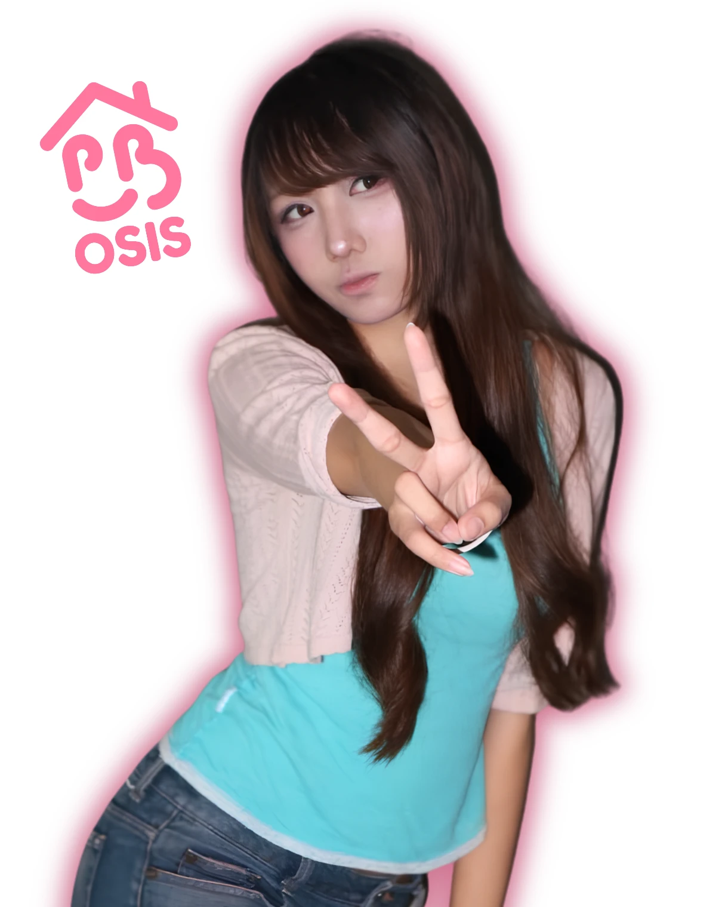

Calon Ketua & Wakil Ketua OSIS Periode 2026-2027
“Born 02Lead”
OSIS Homeschooling Pewaris Bangsa yang aspiratif, kolaboratif, dan inovatif.
kenali kamilihat proker
Profil Calon

Jeanne Felicia Angelique
Halo semua! Saya Jeanne, berusia 16 tahun. Saya menduduki kelas 11 IPS. Saya memiliki ketertarikan di bidang teknologi, desain grafis & sastra.
teknologidesain grafissastra
Raden Nadya Herasmara (Eden)
Halo semua! Saya Eiden, berusia 18 tahun. Saya menduduki kelas 11 IPS. Saya memiliki ketertarikan di bidang sosiologi, geografi, & seni budaya.
sosiologigeografiseni budayaVisi
Mewujudkan OSIS Homeschooling Pewaris Bangsa yang aspiratif, kolaboratif, dan inovatif sebagai wadah bagi siswa untuk berkembang, berkarya, serta membangun lingkungan belajar yang aktif, inklusif, dan menyenangkan.
Misi
Program Kerja
You Name It, We Make It
baca selengkapnya
Program yang memberikan kesempatan kepada seluruh siswa untuk menyampaikan ide, aspirasi, dan usulan kegiatan yang menarik, kreatif, serta bermanfaat bagi lingkungan sekolah. Melalui program ini, siswa dapat berpartisipasi secara aktif dalam menentukan kegiatan yang ingin diselenggarakan, baik melalui formulir aspirasi maupun media komunikasi yang disediakan oleh OSIS. Setiap usulan akan ditinjau berdasarkan minat siswa, manfaat kegiatan, serta ketersediaan sumber daya dan anggaran. OSIS kemudian akan mengupayakan realisasi ide-ide terpilih melalui perencanaan dan pelaksanaan kegiatan yang melibatkan siswa. Dengan demikian, program ini diharapkan dapat menciptakan lingkungan sekolah yang lebih partisipatif, inovatif, dan sesuai dengan kebutuhan serta minat para siswa.
Miles & Smiles
baca selengkapnya
Program kegiatan olahraga bersama yang bertujuan untuk meningkatkan kebugaran jasmani sekaligus mempererat hubungan antarsiswa. Kegiatan ini akan dilaksanakan dalam bentuk jogging atau jalan santai bersama dengan mempertimbangkan kondisi fisik, kenyamanan, dan kemampuan masing-masing peserta. Selain menjadi sarana untuk menerapkan pola hidup sehat, program ini juga diharapkan dapat membangun interaksi sosial yang positif, meningkatkan rasa kebersamaan, serta menciptakan suasana sekolah yang lebih inklusif dan menyenangkan. Pelaksanaan kegiatan akan disesuaikan dengan ketersediaan waktu dan lokasi yang aman serta mudah dijangkau oleh siswa.
Clash of Classes
baca selengkapnya
Program kompetisi esports antarkelas yang bertujuan untuk menyediakan wadah bagi siswa dalam menyalurkan minat dan bakat di bidang permainan digital secara positif, kompetitif, dan bertanggung jawab. Kompetisi ini direncanakan mencakup permainan populer seperti Roblox dan Mobile Legends, dengan format pertandingan yang disesuaikan dengan jumlah peserta serta minat siswa. Melalui kegiatan ini, siswa diharapkan dapat mengembangkan kemampuan kerja sama tim, komunikasi, strategi, sportivitas, dan sikap saling menghargai. Pelaksanaan kompetisi akan dilengkapi dengan peraturan yang jelas, sistem pertandingan yang terorganisasi, serta pengawasan yang diperlukan agar kegiatan berlangsung secara tertib, adil, dan menyenangkan bagi seluruh peserta.
Bits to Bliss
baca selengkapnya
Program pengembangan keterampilan dan kreativitas siswa yang dilaksanakan secara berkala, dengan frekuensi sekitar satu hingga dua bulan sekali. Program ini akan menghadirkan kegiatan berupa lokakarya (workshop), webinar, atau sesi praktik yang memungkinkan siswa mempelajari keterampilan baru maupun mengembangkan kemampuan yang telah dimiliki. Topik kegiatan dapat mencakup berbagai bidang, seperti upcycling pakaian, pembuatan kerajinan clay, melukis, merajut, serta keterampilan kreatif dan praktis lainnya. Materi akan disesuaikan dengan minat siswa, ketersediaan narasumber, dan sumber daya yang dimiliki. Melalui program ini, siswa diharapkan dapat memperoleh pengalaman belajar yang aplikatif di luar pembelajaran akademik, mengeksplorasi potensi diri, serta menghasilkan karya yang dapat dibanggakan. Program ini juga diharapkan dapat mendorong budaya belajar sepanjang hayat, kreativitas, dan keberanian untuk mencoba hal-hal baru.
Video Kampanye
Born 02 Lead
Jeanne & Eden: calon Ketua & Wakil Ketua OSIS 2026-2027. Suaramu menentukan.